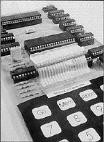
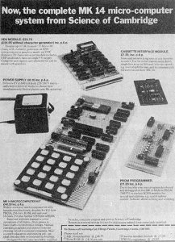

Throughout the 1970s, Radionics made a name for themselves as the producers of calculators. Although their Executive model had a nasty habit of exploding if left on for too long, the company prospered, but the launch of the dreadful Black Watch in 1976 signalled the start of a dramatic collapse. Financial support of the government's National Enterprise Board, in exchange for a majority share in the business. By the late Seventies the company was a shadow of its former self, with losses running into millions. However, Clive Sinclair had a ready-made lifeboat in case of such a crisis. In 1973, he had bought an off-the-shelf company called Abelsdeal, which was renamed Sinclair Instruments in 1975; despite being incorporated into the original company, it remained a separate entity and would eventually provide an escape route for Sinclair.
In the summer of 1977, a young undergraduate called Ian Williamson was working at Cambridge Consultants Limited, preparing for a move to Leyland Vehicles where he had been offered a lucrative position. He had been following the new American hobby of building microcomputers from kit form and felt that there might be a market for such products in the UK, especially as some enthusiasts were paying around £200 for their imports. The only ready-built home computers in the world at this time were hugely expensive and only within the price range of American computer users, who tended to be older than British enthusiasts. This was a different world altogether to the one that Williamson had identified; he was interested in the electronics market, where a basic computer kit belonged in the same realm as a crystal radio set.
Williamson believed that if a kit could be produced for the UK market costing less than £100, there might be considerable interest. In his spare time he had already designed a basic computer out of accumulated spare parts. With his new job impending he knew that he had no chance of developing the idea himself, so he approached Chris Curry, a senior colleague of Sinclair and part of his team since the early 1960s. Curry saw it as an ideal new product for Radionics' sister company, Sinclair Instruments, which had recently changed its name to Science of Cambridge. Following a demonstration, Sinclair and Curry provisionally agreed to buy the idea from Williamson for £5000, plus royalty payments on every unit sold.

While Williamson waited for his cheque, Curry approached National Semiconductor to discuss buying the required chips. Nat Semi promptly offered to redesign the entire kit using only their own parts. This would mean lower costs and more efficient production than using the assortment of different parts required for Williamson’s model. Clive Sinclair felt that this sufficiently altered the end product to justify him beginning his own computer kit without the need to buy Williamson’s idea first.
The MK14 computer kit was released in 1978 under the Science of Cambridge banner and became the first ever British home computer. It bore no resemblance to any modern understanding of the word ‘computer’; it was a merely an educational demonstration of how a microprocessor could be interacted with via a calculator-style keypad. Regardless of these limitations, the demand from enthusiasts, tired of building radios and speakers, was tremendous. Obviously suffering from a degree of guilt over indirectly implementing his idea, Sinclair paid Williamson £2000 for the rights to use his documentation with the MK14 kit.
Due to the company’s limited finances and uncertainty over the demand for this kind of new technology, only 2000 units were originally built - and were snapped up instantly. The future of home computing was suddenly very bright and especially for Chris Curry, who was inspired to leave the company and set up Acorn Computing. Meanwhile, Clive Sinclair negotiated his own resignation from Sinclair Radionics - which was now effectively government controlled following wranglings with the National Enterprise Board - and ploughed his £10,000 pay-off into Science of Cambridge.
Despite the budding market that was opening up for home computers, Sinclair was more interested in exploring the likes of flat screen TVs and electric cars. However, in order to fund these enterprises it became apparent that he would have to exploit the growing consumer demand for the computer. Rather reluctantly, Sinclair ordered the development of a successor to the MK14, instructing that it should be made with the cheapest components available. ‘It’ turned into the ZX80, which was launched in February 1980, available in kit form for £79.95 (plus a further £8.95 for the power supply). The 'ready-assembled' model was launched a month later, priced £99.95.
The ZX80 was a massive advance on the MK14. It could be wired up to a television, it sported a QWERTY keyboard and it used Beginners All-purpose Symbolic Instruction Code (BASIC) as a programming language. These features rendered it far more accessible than anything that had gone before - the first real home microcomputer, in fact. In recognition of the importance of the new computer market to the company, its name was changed to Sinclair Computers in November 1980.

The ZX80 suffered from rushed production, cheap components and a paltry 1K of memory to work with, but it turned into a major success for Sinclair, selling 20,000 units by October 1980 to a public who on the whole had no knowledge of what to expect from a home computer. Despite having no graphics capability, the ZX80 was even used for games, much to Clive Sinclair's amusement. The first game was Space Intruders which could be typed in from Tim Hartnell's book Making the Most of Your ZX80 or ordered in tape form from Ken MacDonald of Solihull.
Around this time, WH Smith's Brent Cross branch in North London was experimenting with a 'Computer Know-how' unit, an idea of market development manager John Rowland. The section consisted of a Commodore PET borrowed from a local dealer, a few copies of Byte magazine and a collection of books (which were actually about calculators, because they couldn't find any with a computer theme). When the section was opened, the reaction was phenomenal - it was over-run with interested customers and had to roped off. This convinced Rowland to approach Sinclair in September with a view to selling the ZX80. Sinclair needed a high street outlet for his products and Rowland wanted in on a product that could reverse his company's fortunes. As Rowland explained, "Clive suggested that rather than take the ZX80, I should wait for his new product, then still unnamed. By Christmas 1980, it was officially the ZX81."
The release of the new machine coincided with another company name change, this time to Sinclair Research Limited.

The ZX81 was available both as a kit at £49.95 and in ready-assembled form for £69.95. Like its predecessor, it worked in black-and-white, had a dreadful keyboard and no sound. What it did have though was an improved version of BASIC, a display that didn’t flicker every time a button was pressed, no parts visible (most ZX80s were used with the cover off to prevent overheating) and most importantly for Sinclair, it was cheap. It also possessed enhanced maths capabilities, which enabled it to be advertised as an educational tool. Admittedly, if you were serious about programming on it, a RAM pack needed to be attached, but at last here was a machine that could bridge the gap between technically-minded hobbyist and the man in the street.
With virtually no competition and some clever marketing which portrayed ‘Uncle’ Clive Sinclair as the friendly face of the technological vanguard, consumers were intrigued and comforted sufficiently to bring the ZX81 into their homes by the thousand. A turning point had been reached, bringing to an end the days of expensive mail order kits and the view of computers as a quirky minority interest. Sinclair had transformed this new technology into an accessible, off-the-shelf consumer item. After initial mail order sales, the ZX81 was released exclusively in WH Smith, whose ‘computer corners’ were swamped. A year after their high street release, 350,000 ZX81s had been sold.
Not that the ZX81 was the only computer on the scene. The American Atari 400 and 800 had been on sale for some time, but at £395 and £695 they were prohibitively expensive. The Commodore Vic-20 was launched in June. It was colour, had a proper keyboard, a custom chip (the Video Interface Chip - hence Vic) and a full 5K of memory. Unfortunately, it also had a price tag of £299.95. In terms of home-grown opposition, Acorn had come up with the Atom, a very capable computer that cost £125 as a kit or £150 ready-built. It boasted high-resolution, five graphics modes and 192 graphics characters. If Acorn had overcome appalling production problems, the ZX81 may have run into stiffer competition, but as it was it ruled virtually unopposed.
Sinclair had always planned his computers as business machines, but young men (and it was an oddly male-only interest in those days) put their new technology to better use than merely doing sums - playing games. The ZX81 produced only the blockiest of graphics, but a growing number of magazines were appearing that included program listings that could be typed in, perhaps the most inspired piece of minimalist coding being a 1K chess program that was published in Your Computer.
Software was also beginning to become available in cassette form as home programmers looked to sell their efforts to a public eager to play anything on their new computers. During this pioneering age companies that would form the foundation of the British software scene took shape, such as Bug Byte of Liverpool and Quicksilva of Southampton. Working with such a limited medium as the ZX81 programmers found it necessary to demonstrate incredible degrees of discipline and ingenuity to streamline their programs. This experience would hold them in good stead in future years.
By now the new computer enthusiasts were mobilising themselves. With the explosion of interest in computers and the pace of development, many users were keen to communicate with other members of the computer-owning fellowship. The first person to help was the writer Tim Hartnell. Since coming to Britain from Australia in 1979, he had followed the computer boom with interest, rapidly becoming the country's leading writer of programming books, as well as establishing the National ZX80/81 Users Club. One of its members, Mike Johnson, badgered Hartnell into organising a club meeting. Expecting little response, a get together in a West London pub was announced in the club newsletter. To their amazement 70 members turned up and spent the evening animatedly discussing their shared passion.

It would be the last time the meeting was held in such inauspicious surroundings. Tim Hartnell's book commitments were taking up all of his time, so Mike Johnson took on the responsibility of arranging the next meeting and settled on the Central Hall in Westminster as a venue. Due to costs, advertising was limited to a small piece in PCW magazine, so only a few hundred people were expected to attend. On September 26th 1981 the first ZX Microfair, as it called itself, opened its doors and thousands of people poured inside. An estimated 5,000 people came that day, demonstrating in no uncertain terms the growing popularity of the new Sinclair computers. The Microfair became a regular event, allowing computer owners a chance to meet and offering small shops and clubs the chance to sell their wares in a car boot-type set up. Despite moving venues several times, the fairs remained popular and never lost their enthusiast's feel.
By the end of 1981, Sinclair were the undisputed world leaders in the home computer market. Not that they could afford to be complacent; new machines were beginning to creep onto the market from other producers, boasting colour and memories many times that of the ZX81. People waited with bated breath for Sinclair's answer to this new generation of computers, and he didn’t disappoint.